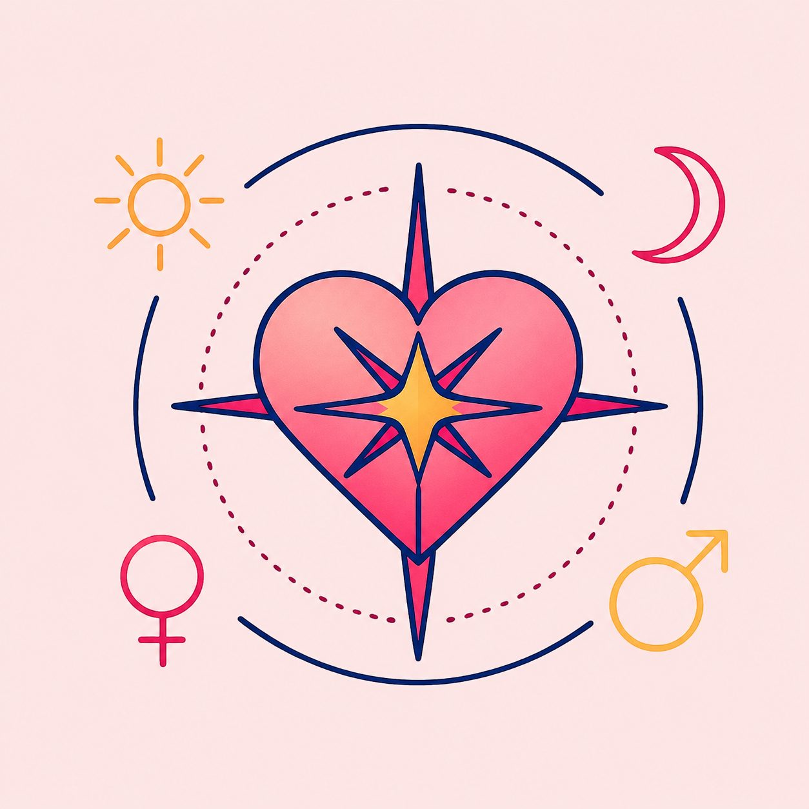

O Mapa dos Encontros: o roteiro da atração e da convivência
 Elaine Imenes · 10 min de leitura
Elaine Imenes · 10 min de leitura

A análise de um relacionamento, sob a ótica da astrologia, exige o abandono das leituras simplificadas baseadas apenas na compatibilidade entre signos. Amar, conviver, desejar e permanecer não são experiências explicadas por uma única posição planetária. Um vínculo se forma no cruzamento de muitas camadas do mapa natal, mas há quatro funções que ajudam a compreender de maneira mais clara a dinâmica dos afetos: Sol, Lua, Vênus e Marte.
É evidente que os demais planetas também importam. Mercúrio mostra a linguagem da troca e da negociação; Júpiter indica crenças, expansão e visão de mundo; Saturno revela limites, maturidade e compromisso; Urano, Netuno e Plutão apontam forças coletivas e camadas mais profundas de transformação. Ainda assim, quando o assunto é encontro, desejo e convivência, Sol, Lua, Vênus e Marte formam uma estrutura básica de leitura. Eles organizam dois pares simbólicos fundamentais: identidade e pertencimento, atração e ação.
Na tradição astrológica, costuma-se associar Sol e Marte a princípios ativos, e Lua e Vênus a princípios receptivos. No entanto, essa linguagem não deve ser confundida com uma divisão fixa entre masculino e feminino no sentido social, biológico ou sexual. A astrologia opera com símbolos, funções e polaridades, não com modelos fechados de identidade ou orientação afetiva. Os fatores astrológicos podem ser compreendidos como padrões de energia e funcionamento psíquico, e não como determinações rígidas de comportamento (Arroyo, 2013).
Por isso, não importa se a pessoa é heterossexual, homossexual, bissexual ou se vive seus afetos fora das categorias mais convencionais. O que importa, astrologicamente, é como cada pessoa realiza suas próprias funções internas, como reconhece suas necessidades, como deseja, como age e como se relaciona com o outro sem abandonar a si mesma. A leitura astrológica, nesse sentido, aproxima-se mais de uma linguagem simbólica de autoconhecimento do que de uma classificação fixa das relações humanas (Rudhyar, 1991).
O “Mapa dos Encontros” não é um guia de afinidades prontas, mas um roteiro de investigação. Ele não responde simplesmente “com quem combino?”, mas propõe perguntas mais exigentes: como eu amo? O que me atrai? O que me dá segurança? Como ajo quando desejo algo? O que espero do outro que, na verdade, preciso reconhecer em mim?
O Sol representa a função diretiva do mapa. Ele indica o eixo da identidade, a forma como a pessoa organiza sua presença no mundo e busca expressar aquilo que a torna singular. No campo dos vínculos, o Sol mostra a necessidade de reconhecimento, autoria e direção. Quando essa função está bem integrada, a pessoa não entra em uma relação para desaparecer dentro do outro, nem para ser definida por ele. Ela se relaciona a partir de um centro mais consciente.
Essa compreensão do Sol como centro organizador da experiência dialoga com a perspectiva de Rudhyar (1991), para quem a astrologia deve ser lida como uma linguagem de desenvolvimento da personalidade, e não apenas como um conjunto de indicações externas ou previsões. Quando a função solar está enfraquecida ou pouco elaborada, a relação pode se tornar um palco de validação. O outro passa a ser convocado para confirmar uma identidade que ainda não encontrou sustentação própria. Nesse caso, o vínculo deixa de ser encontro e se transforma em dependência de espelho.
A pessoa não quer apenas amar; quer ser vista, confirmada, escolhida e autorizada a existir. O problema não está no desejo de reconhecimento, que é humano, mas na transferência dessa responsabilidade para o outro. Spinoza (2007), ao tratar dos afetos, ajuda a pensar essa dinâmica quando mostra que as paixões humanas envolvem modos de dependência, variação e busca de afirmação da própria potência diante do mundo.
A Lua, por sua vez, revela a base emocional da experiência. Ela fala da memória, dos hábitos, da infância, das reações instintivas e das formas de proteção. Se o Sol aponta para a direção da identidade, a Lua mostra o lugar onde a pessoa busca repouso, familiaridade e segurança. Nos relacionamentos, ela indica o que faz alguém se sentir acolhido, protegido ou ameaçado.
É pela Lua que percebemos como a pessoa reage ao cotidiano da convivência. O modo como lida com silêncios, mudanças de humor, ausências, rotinas, pequenas frustrações e necessidades de cuidado passa por essa função. Sasportas (2011), ao discutir as casas astrológicas e os campos da experiência, reforça a importância de compreender o mapa como uma estrutura viva, na qual as necessidades emocionais ganham expressão em situações concretas da vida.
Muitas crises afetivas não nascem da falta de amor, mas do desencontro entre necessidades lunares. Uma pessoa pode precisar de presença constante para se sentir segura, enquanto outra precisa de espaço para não se sentir invadida. Sem consciência dessas diferenças, o vínculo pode transformar necessidade legítima em cobrança permanente.
Vênus introduz outra camada. Ela representa a função de avaliação, escolha, prazer e valor. Vênus mostra o que consideramos belo, desejável, agradável e digno de aproximação. Não se trata apenas de romance, mas da capacidade de estabelecer acordos, cultivar prazer, reconhecer valor no outro e criar uma estética da convivência. Greene (2021) observa que os vínculos afetivos não se sustentam apenas pela intensidade emocional, mas também pelos padrões de desejo, projeção e expectativa que cada pessoa leva para a relação.
Em uma leitura, Vênus revela como alguém oferece afeto e como espera recebê-lo. Algumas pessoas demonstram amor pela presença, outras pela palavra, pelo cuidado prático, pela lealdade, pela leveza, pelo toque, pela beleza compartilhada ou pela construção de acordos. Quando Vênus está inconsciente, a pessoa pode acreditar que sua forma de amar é universal. Espera que o outro valorize as mesmas coisas, deseje do mesmo modo e compreenda os mesmos sinais. Daí nascem muitos ruídos afetivos: não necessariamente da falta de sentimento, mas da diferença entre linguagens de valor.
Marte completa esse eixo ao representar ação, impulso, desejo e afirmação. Se Vênus mostra aquilo que atrai, Marte revela como a pessoa se move em direção ao que deseja. Ele fala da iniciativa, da coragem, da conquista, da sexualidade, da defesa de território e da forma como cada um lida com conflito. Em uma relação, Marte é indispensável porque nenhum vínculo se mantém apenas pela harmonia. Toda convivência exige negociação de vontade, manejo de frustração e capacidade de agir sem destruir o campo comum.
Essa distinção entre atração e ação é fundamental para a leitura dos relacionamentos. Enquanto Vênus aponta para critérios de valor e aproximação, Marte expressa a força que mobiliza o desejo e permite ao indivíduo agir no mundo. Arroyo (2013) contribui para essa compreensão ao tratar os planetas como funções energéticas que se manifestam em diferentes níveis da experiência humana.
Quando Marte é reprimido, a pessoa pode evitar conflitos até que o ressentimento se acumule. Quando Marte é vivido de modo bruto, a ação vira imposição, pressa ou disputa permanente. A maturidade marciana não consiste em eliminar o conflito, mas em aprender a agir com clareza. Desejar não é invadir. Afirmar-se não é dominar. Discordar não é romper. Marte, quando bem integrado, permite que o vínculo tenha vitalidade, movimento e verdade.
Essas quatro funções não devem ser lidas isoladamente. O mais importante está na conversa entre elas. Uma pessoa pode ter uma Vênus que busca leveza, prazer e sociabilidade, mas uma Lua que precisa de profundidade emocional e proteção. Pode ter um Sol que deseja autonomia, mas um Marte que hesita diante da iniciativa. Pode se atrair por relações intensas, mas precisar de uma rotina calma para se sentir segura. É nesse tipo de contradição interna que a astrologia se torna mais interessante.
O mapa natal não descreve uma pessoa pronta, simples e coerente. Ele mostra uma arquitetura viva, composta por funções que nem sempre querem a mesma coisa ao mesmo tempo. Por isso, uma leitura séria dos afetos não deve procurar apenas “o par ideal”, mas compreender o modo como o próprio indivíduo organiza desejo, identidade, segurança e ação. Rudhyar (1991) contribui para essa perspectiva ao deslocar a astrologia de uma lógica meramente preditiva para uma compreensão simbólica da personalidade e de seus processos de desenvolvimento.
O encontro com o outro, portanto, também revela o encontro com partes de si. Muitas vezes, aquilo que fascina em alguém corresponde a uma função pouco vivida no próprio mapa. Outras vezes, aquilo que irrita no outro aponta para uma necessidade interna que ainda não encontrou linguagem. A relação, nesse sentido, não é apenas um espaço de afeto, mas também um campo de consciência. Ela mostra onde a pessoa ama com liberdade e onde ainda ama por carência, medo, repetição ou projeção.
Campion (2008), ao situar a astrologia dentro da história da cultura ocidental, permite compreender que sua permanência não se deve apenas ao interesse por previsões, mas à sua capacidade de oferecer uma linguagem simbólica para interpretar a experiência humana. Nessa perspectiva, o mapa não funciona como sentença, mas como estrutura de leitura.
Isso não significa transformar toda relação em análise. O amor precisa de corpo, presença, humor, desejo e vida concreta. Mas a astrologia pode oferecer uma linguagem para compreender o que se movimenta por trás das escolhas afetivas. Ela ajuda a diferenciar atração de compatibilidade, intensidade de vínculo, carência de cuidado, desejo de posse e amor de fusão.
O “Mapa dos Encontros” propõe exatamente essa passagem: sair da pergunta infantil sobre quem combina comigo e entrar em uma investigação mais madura sobre como eu participo dos meus vínculos. Sol, Lua, Vênus e Marte não dizem apenas quem alguém ama, mas como essa pessoa se posiciona diante do amor. Eles mostram como ela deseja, acolhe, escolhe, reage, age, cede, insiste, se protege e se afirma.
No Dia dos Namorados, talvez essa seja uma reflexão mais interessante do que buscar receitas de compatibilidade. Amar não é encontrar alguém que resolva todas as nossas contradições. Amar é aprender a reconhecer as próprias engrenagens para que o outro não seja obrigado a carregá-las sem nome. Um relacionamento se torna mais consciente quando cada pessoa assume a responsabilidade por sua forma de desejar, cuidar, escolher e agir.
A astrologia, quando bem utilizada, não promete o par perfeito. Ela oferece linguagem, método e espelho. Não para aprisionar o amor em categorias, mas para devolver à pessoa a autoria de sua experiência afetiva. Porque antes de perguntar se dois mapas combinam, talvez seja preciso perguntar se cada pessoa sabe habitar o próprio mapa com honestidade.
Para continuar essa conversa
No dia 11 de junho de 2026, às 19h, acontece o encontro O Mapa dos Encontros: o roteiro da atração e da convivência. Será uma aula dedicada à leitura de Vênus, Marte, Lua e Sol no mapa natal, com foco na forma como cada pessoa vive o desejo, o afeto, a segurança emocional e a própria identidade dentro das relações.
O acesso poderá ser adquirido pelo link abaixo, e a gravação ficará disponível por um ano para quem se inscrever.
https://www.elaineimenes.com/omapadosencontros
Referências
ARROYO, Stephen. Astrologia, psicologia e os quatro elementos: uma abordagem astrológica ao nível de energia e seu uso nas artes de aconselhar e orientar. 2. ed. São Paulo: Pensamento, 2013.
CAMPION, Nicholas. A history of western astrology: volume I: the ancient and classical worlds. London: Continuum, 2008.
GREENE, Liz. Os astros e o amor: um guia astrológico completo sobre relacionamentos. 2. ed. São Paulo: Pensamento, 2021.
RUDHYAR, Dane. Astrologia da personalidade: uma reformulação de conceitos e ideais astrológicos em termos de psicologia e filosofia contemporâneas. São Paulo: Pensamento, 1991.
SASPORTAS, Howard. As doze casas: uma interpretação dos planetas e dos signos através das casas. 12. ed. São Paulo: Pensamento, 2011.
SPINOZA, Baruch. Ética. Tradução de Tomaz Tadeu. Belo Horizonte: Autêntica, 2007.